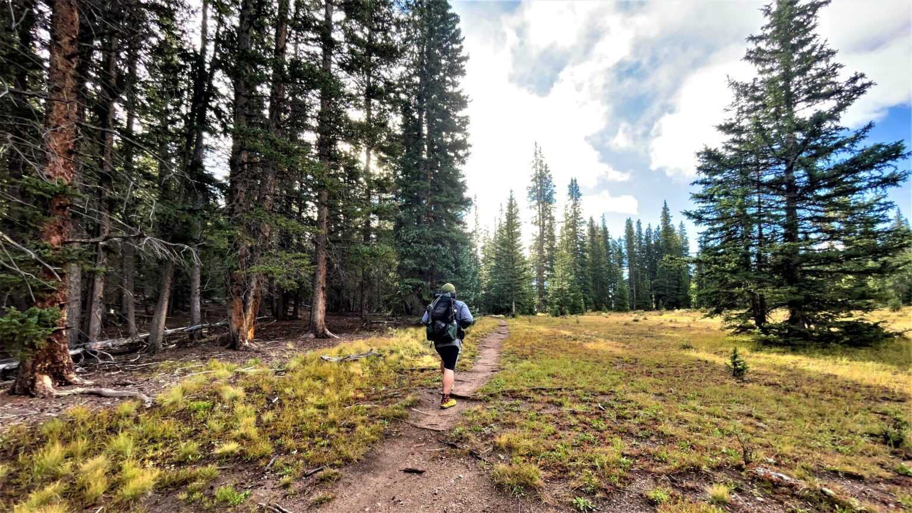

Hiking 70 Miles Alone on the Colorado Trail | Denver to Kenosha Pass
December 5th, 2021
TLDR
In late August/early September of 2021, I hiked 69 miles on the Colorado Trail (CT) from Waterton Canyon in Littleton, Colorado to Kenosha Pass near Fairplay, Colorado. The hike took 5 days to complete. I started on Sunday, August 29th and ended on Thursday, September 2nd.
Overall, I would highly recommend this hike to anyone, as the climbs are not too steep and the infrastructure for hiking in Colorado is great.
Getting To Denver
I planned this trip on fairly short notice, which is why I decided to drive to Denver. I live near Rockford, Illinois, which is about a 14 hour, ~1000 mile drive from Denver. I have driven long distance many times before and somewhat enjoy it for some reason, so it wasn't problem for me. I left after work (around 4PM, I believe) on Friday the 27th and drove through the night, stopping at a Cabela's near Omaha, NE for a ~2hr nap in my car. I'm lucky enough to have a good friend that lives in Denver, who allowed me to park my car at his apartment and generously dropped me off at the trailhead on Sunday. I arrived at my friend's apartment around 10AM Saturday morning, just in time to join him on an off-roading expedition he had planned for the day.
The Hike
Map - Colorado Trail - Waterton Canyon to Kenosha Pass
I used CalTopo for this trip, my first time using it for a long hike. It was fun building my own map for this hike, but overall I would recommend using the much more straightforward FarOut (formerly Guthook) guide for a complete Colorado Trail map here: https://faroutguides.com/colorado-trail-map/. A link to my CalTopo map: https://caltopo.com/m/6A6BL.

Gear
I embedded my LighterPack gear list below, but you can also access it here: https://lighterpack.com/r/mvaciw.
Day-By-Day Colorado Trail Hike Breakdown
Day 1 | Sunday, August 29th - Segment 1 - 15.9 Miles
Early on Sunday morning, my friend dropped me off at the Waterton Canyon trailhead. The trailhead was surprisingly not even fully in the start of the Canyon, and was right near entrance to the the Littleton, Colorado Lockheed Martin facility. After saying goodbye, I crossed the street and took some pictures and video near the sign signifying the start of the CT. This was the start of what was basically an 8 mile gravel road walk following the South Platte river. This road was closed off to all but the few residents who own homes on this gravel road. It was a fairly busy path, with lots of people out to fish on the river, walk, and right bikes. There were many shaded picnic table that were open to the public right near the river. Finally, after a hot ~8 miles of road walk, dodging people, bikes, and the like, I reach the point were the CT diverges from the river. I rested in the shaded pavilion there that has a great view of the Strontia Springs Dam, spraying huge plumes of water from its outlet pipe. After cooling off for a bit, I clambered down the steep river bank to collect some water as I had run out and it would be my last chance for quiet a few miles. Feeling refreshed, I hiked on. The point where the CT departs from the road walk is the start of a 1000', 1.5 mile climb that has fairly heavy mountain bike traffic. The trail eventually led me to the top of the climb after quite a few switchbacks. Relieved to have reached the top at ~6500', I started down a gentle decent and reached Bear Creek after 3/4 of a mile at around 2pm. I was extremely pleased to find Bear Creek running, cool, and shaded. I rested by the creek side for about an hour, drinking my fill of the cool water and rinsing off the gravel grime. In exposed areas of the trail, I would have guess the temperature to be around 85°F, but near the creek it was probably about 70°F. Tearing myself away from the oasis, I was eager to finish the last 7 miles and 1400' of climbing for the day. I hiked fast, listening the Iain Banks' book Raw Spirit about his tour of his homeland of Scotland trying to find the mythical "perfect dram." After a few hours of hiking, I finally made it to where the Colorado Trail meets the South Platte River for the last time and crosses North Platte River Road. There were a few small, dusty patches of earth to camp near the road. So in the dying light, I quickly set up my tent, ate a dinner of beef jerky and granola bars, and immediately fell asleep. The first day of any long hiking trip is always the most tiring.
Day 2 | Monday, August 30th - Segment 2 & 3 - 13.9 Miles
I awoke to the sound of the nearby river, with the sky a dark blue, the sun not yet having risen above the mountains that surrounded me. I used the pit toilet in the parking area between the river and I, thankful to not have to find a place to squat in the woods. Deconstructing camp went quickly, before long I was crossing the bridge and starting my climb for the morning. I was trying to get as many miles in as possible before the hot sun was at full force. My hiking plan for that day was to cover about 14 miles, which included the most brutal (or so I've been told) segment of the Colorado Trail, segment 2. I had filled up with about 2 liters of water at the South Platte, thinking this would be plenty to get me to the next water source, a spigot at a fire station ~9.5 miles away. I started the climb. It was going to be 1700' of elevation gain before I would reach the fire station spigot. The climb started pleasantly enough, the morning air keeping me cool as the terrain got higher and dryer, the undergrowth slowly transitioning from shrubs to succulents. As the sun finally appeared over the mountains, I felt the temperature quickly increase. After quickly knocking out the first 5 miles of my day, I had gained most of my elevation for the day. The trail started to follow a ridge parallel to a gravel road. I have never hiked in a true desert before, but I imagine it wouldn't be much different from the stretch I was experiencing. The landscape had become dry and desiccated, with trees few and far between. Gradually, the sun had turned from a provider of warmth and light to an oppressive heat lamp. Hiking became marching, and I had to fight the urge to chug what was left of my water. Only a few miles left until the fire station spigot, and hopefully shade. The trail became a mild climb as I neared the fire station, but my body had decided that any amount of uphill was too much and protested with every step. Water trucks obviously headed to the fire station kept passing near the trail on the gravel road. I fantasized that one would stop and offer me a small amount of their huge supply. Over a ridge, I got a glimpse of the fire station and was thankful that I would soon be able to sit in the shade and drink my fill of water, of which I was nearly out of. I continued on and finally, after what felt like an eternity, I reached the road where the fire station was supposed to be. Looking around, I couldn't see it. Frustrated, I turned left and continued down the road, as the CT follows it for about half a mile before turning back into the national forest. I finished the last of my water as I knew I would be getting more soon. Maybe the fire station was just around the corner? I passed a few houses before I got to the point where the CT become trail again. Had I missed it? I knew the heat was making my head swim a bit, so it was possible had I looked at it and didn't recognize it as the fire station. I felt myself start to panic a bit, so I knew I needed to stop and figure this out. I looked around and told myself that I would be fine no matter what, as I was on a busy road with houses nearby. If I was desperate, I could always get a ride to a nearby town or knock on someone's door. I pulled out my phone to check exactly where I had marked the fire station to be. I should be standing right on top of it, bit instead I was just at a dusty hot trailhead in what felt like the middle of nowhere. After a short amount of time, a pickup truck pulled out of a nearby driveway and pulled in to the trailhead I was at. My first thought was maybe I looked pitiful enough that they came to help me. But an older couple got out truck and went to grab some tools out of the truck bed. Not wanting to wait to see if they would say hi to me, I waved at them and asked if they knew where the fire station was. They pointed down the road in the direction I had just come from. Surprised, I slowly started in that direction. After 10 minutes of walking down the side of the road on hot black asphalt with no water left, I reached where I had first met the road. I realized I must have been looking in the wrong direction when I first got there, and continued walking down the road. 10 steps later, I saw a huge "Fire Station" sign rise up from below the horizon. Relieved, I almost ran to the station. At the back of the building, I found what I had been looking for. A spigot label "For CT Hikers", with a bench beside it, all in the cool shade of the fire station. I filled my bottles, happy to not have to slow down to filter my water, sat down on the bench, and drank my fill. I laid down on the bench and closed my eyes, dozing as I slowly felt my head cooling down. Suddenly, a dog was barking. I shot up and realized it was just the fire station dog who was surprised by my presence. Taking this as my sign to go, I topped off my water one last time and headed back up the road. Before long, I was at the trailhead and west on the CT. The trail almost immediately turn became shaded. The rest of the hike for the day was fairly flat, and I met my first thru-hiker headed towards Denver. We chatted briefly, and I told him how jealous I was that he had time to do the whole trail. It took about 2 more hours of hiking to reach my camp spot for the evening, Morrison Creek. The day was approaching dusk and it seemed that I wouldn't be sharing the area with any other campers. When I hiked the first 700 miles of the AT in 2017, I don't think I ever camped anyone with fewer than 30 other people sleeping nearby. Camping completely alone was a bit of an adjustment for me, but I was quickly gaining an appreciation for not having to worry about what anyone else was doing around me. I had my pick of the best tent spot, could hang my food anywhere, and didn't have to worry about my noise or headlamp disturbing anyone else.
Day 3 | Tuesday, August 31th - Segment 3 - 9.3 Miles
I woke up the next day, happy to have completely what was likely the most challenging stretch of trail of my section hike of the Colorado Trail. It was around 5AM and still dark, but I knew I wouldn't be able fall back asleep. I strapped on my headlamp, packed up, and continued down the trail. I had decided yesterday that I would try to spend the night at the hostel in Bailey, Lynwood Park, if possible. I didn't have cell service where I camped, so I would have to wait until I was closer to town to call the hostel. After hiking about a few hours, I reached a creek that I had been looking forward to, Buffalo Creek. It was a rushing quickly with some of the coldest water I had found yet on trail. I took a break here and at my breakfast, a bag of gummy worms. For some reason, I could eat a diet of nearly 100% gummies while hiking if I let myself. Once the gummies were gone, I started my final stretch of hiking for the day, ~4 more miles to where the trail crossed the road down into Bailey, Colorado. When I was about 2 miles form the road crossing, I finally got service again on my phone. I called the hostel. Luckily, the owner picked up. Relieved, I asked him if he would be able to pick me up (pickups are included if you are staying the night at the hostel). I nearly ran to the road crossing, called Rolling Creek Trailhead, looking forward to hot food after 2 days of eating only foods that don't require any prep. I got to the crossing too quickly, as I had to wait about 20 minutes before the hostel owner showed up. He greeted me with a cold Gatorade (he clearly has met plenty of hikers in his lifetime). We talked about the trail as we drove down from the mountains to the small town of Bailey. We arrived at the hostel around 11AM and he gave me a tour of the hostel. The upper half of the house was where he and his wife lived, the yard was a campground that anyone could stay at for a fee, and basement was a run down hiker hostel. The final stop on the tour was the kitchen/supplies area, that had a fridge full of soda and a freezer full of cheap frozen meals. The owner explained that they went off the honor system, and I just had to write down whatever I took on a slip of paper. With that, he left me to relax. I called my then girlfriend (now fiancé), told her all about the trail up until that point, then got a soda and microwaved a mini pizza for lunch. That microwaved pizza was delicious after eating trail food for 2 days. The bunks only had a thin pad as a the mattress, so I blew up my air mattress, put it on top of the pad, and slept the rest of the afternoon away. Dinner was pretty much the same as lunch, a microwaved bean burrito from the freezer. There weren't any restaurants a convenient distance away, so eating at the hostel was the easiest choice. After sitting in the kitchen a while, a guy that was camping there came an introduced himself. It turned out that he was a very accomplished hiker, having hiked the AT, PCT, and some of the CDT, on which he got a foot injury he was still recovering from. While healing, he was doing trail magic up and down the CT. The interesting people you meet on long trails is one of my favorite aspects of hiking. The sun had gone down and the temperature had dropped quite a bit, so I decided it was time to sleep for the night. I was the only one staying in the hostel that night, so I had the quiet room all to myself. I laid down and quickly fell asleep.
Day 4 | Wednesday, September 1st - Segment 5 - 14.3 Miles
The previous day, I had decided that I would have the hostel owner drop me off at Kenosha Pass, instead of Rolling Creek Trailhead. This would save me from the 6 miles, 2200' climb out of the trailhead. Basically, I'd being going downhill overall instead of uphill overall. I woke up and quickly packed up, got some breakfast, and paid up for the stay (about $80, including food and the special shuttle to Kenosha Pass). We were on our way at around 8AM. Before long, I had said goodbye to the hostel owner and was hiking into the gorgeous aspens at Kenosha Pass. With only smaller climbs ahead of me, I was enjoying the hike as much as anyone possibly could. My first stop for the day about 7 miles in was at Rock Creek, which I would highly recommend as a lunch spot or campsite. The creek was clear and ice cold. It felt amazing on my tired feet. Fill up on water here as it is the last reliable source until the crossover from Segment 5 to 4. Side note: This is where you can split off from the CT to take the "Lost Creek Wilderness High Route". I'm not sure about how official this trail is or how difficult. From the map, it looks like a very dry 14.6 mile stretch that reaches 12434' at its highest. It meets back up with the CT in the middle of Long Gulch. It would add about 2 miles to your hike and a significant amount of elevation gain. After leaving the creek, it wasn't long until I enter the Lost Creek Wilderness. Almost immediately, I could tell I was in a much more isolated area of the trail. Unlike the rest of the trail, mountain bikes aren't allowed in the wilderness and have to take a ~70 mile detour to meet back up with the Colorado Trail. Where I planned to camp was another ~7 miles from the creek. Most of the rest of the hike was along mountainsides, which afforded great views of the area. Around 4 in the afternoon, I reached the end (or start?) of Segment 5. It's a fairly steep area to camp in, but there are some flat spots to be found. It looked like it might rain, so I quickly set up my tent in a small aspen grove. By the time I had crawled into my tent, it had started to rain. I ate some dinner in my tent, which you aren't supposed to do but I wasn't about to sit out in the rain. It had gotten colder, so I put on every layer I had. I had debated between bringing my 20 degree quilt or my 40. In the end, I decided on my 20 as I wasn't very familiar with the terrain. In that moment, I was happy I had brought it, as I think the temp got down to about 40 degrees. I fell asleep at around 7PM without even realizing it.
Day 5 | Thursday, September 2st - Segment 4 - 15.6 Miles
I woke up, sad that it was my last day on the Colorado Trail. I desperately wished that I could take another 6 weeks off work to finish the rest of the trail. Unfortunately, that wasn't an option if I wanted to keep my job. Day 5 would consist of a small climb up to Long Gulch, walking through the gulch, and then sharply descending about 2200' over 6.3 miles to Rolling Creek Trailhead. I packed up camp and headed down trail towards Long Gulch. Today was likely to be the most picturesque of the trip. The first small climb was through ~2 miles of wet, dark pine forest. After a small stretch of blowdowns near the top, I had entered the gulch. Long Gulch was very pretty. The sun was just starting to come over the mountains as I reached it, glinting in the dew droplets on every blade of grass. The middle of the gulch was a creek/marsh, but the trail hugged the north side of it, keeping hiker's feet out of the mud. I could see down the entire ~6 mile length of it, and to the mountains beyond. I slowly made my way down the gulch, taking in everything around me, reflecting on how you only get a limited number days like that day in life. After about 2 hours of hiking, I had reached the end of the gulch and the emotional ending of my hike. Now all that was left was a short uphill then the long descent back to civilization. I ate lunch at a bridge that led to a jeep trail, drinking water from the creek (North Fork) that flowed under it and soaking my feet. Then I started the short climb. I was quickly over the high point and headed downhill. It felt pretty steep, which can turn legs to jelly, but also helps you cover ground much faster. The miles flew by and the terrain was pretty. Lots of aspens and interesting rocks. I stopped once to fill up on water at a small stream. I made it to the bottom in at most 2 hours, meaning I averaged a bit over 3 MPH on the way down, which is very fast hiking for me. I made it to the trailhead early in the afternoon, my legs feeling like jello. I had arranged for the hostel owner to pick me up. I waited for him for a bit, and started to worry that he wasn't on his way. There was no cell reception at the actual trailhead, so I started walking towards town, hoping that I would get reception once I got closer. It started to rain, so I started to pull out my jacket. As I was pulling it out, I saw the beat up white minivan that I was looking for come around the corner. On the ride back to town, I asked if I could be dropped off at the brewery in Bailey, Mad Jack's Mountain Brewery. While I was eating a much deserved sandwich and drinking a beer, I started a conversation with 2 other people that were there together. It turned out that they were also avid hikers, although they were just in town to catch up. They both had hiked the Appalachian Trail and the Colorado Trail, and both now lived in Colorado. The people you meet on and around long trails are one of my favorite parts of hiking. I spent the night at the hostel and the hostel owner dropped me at the Pine Junction bus station.
Getting Back to Denver
With the help of the Lynwood Park (the hostel in Bailey, CO) owner, it was very easy getting back to Denver. He dropped me off at the Pine Junction Park n Ride. From there, I caught the Bustang CDOT Outrider bus back to Denver Union Station. It's very easy to purchase a ticket using their app. From the station, I took an Uber which are readily available in Denver back to my friend's apartment. There is also an airport train from Union Station if you are hoping to get to the Denver International Airport.